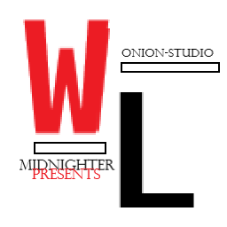

Midnighter WinLib
Сегодня я выпустил обновление 1.1!!!
Документации пока нет (есть рукаводство), да и вообще я создал эту библиотеку ради интереса.
Вряд ли кто-нибудь захочет ею (библиотекой) воспользоваться.
Вот краткий обзор классов и их методов:
Данная библиотека создана для работы с GDI и WindowsAPI, что в сущьности включено одно в другое.
WinLib работает на GDI и создана для статических интерфейсов (анимаций по минимуму).
Класс wl::Window
#include <WL/Window/Window.hpp>
Класс wl::Window для создания окна. Окон может быть (технически) до 10000 (зависит от технических возможностей пк и версии Windows).
Первый параметр в конструкторе wl::Window это wl::WindowTransform для редактирования позиции и размера окна.
Структура wl::WindowTransform хранит в себе posX, posY, sizeX, sizeY отвечающие соответственно за положение окна по X и Y координатам и за размер по тем-же координатам.
Второй параметр конструктора wl::Window это строка либо узкая, либо широкая - это заголовок окна.
Третий и последний параметр это стиль окна.
Стили окна:
Default - зто стандартный стиль. Включает в себя
все стандарнтные кнопки и иконки окна, а так-же
загаловок.
DefaultNoResize - это тот-же
Default только без возможности изменения размера.
Border - это голое окно. Просто барьер
определённого размера.
Fullscreen - этот стиль обычно пременяют в играх
он растягивает окно на весь экран.
Просто возвращает открыто ли окно то есть создано ли оно. Возвращает true если окно у данного wl::Window есть и false если нет.
Принимает один аргумент (тип аргумента строка узкая или широкая) и меняет заголовок окна на поданый аргумент.
Принимает первым аргументом массив пикселей (Uint32), вторым ширину той области которую используем в изображении, третим высоту используемой облости.
Принемает такие-же аргументы как и wl::Window::setIcon, но к ним добавился аргумент hotPos типа wl::Vector2i(о нем позднее), который определяет точку которая и будет курсорм ((0,0) - это координаты верхнего левого угла изображения).
Возвращает положение курсора относительно окна.
Первым аргументом подаеться объект wl::Event (о нем позднее), который принимает и обрабатывет события, которые обнаружила wl::Window::listenEvents.
Первым аргментом подаеться wl::Color (о нем позднее), который содержит цвет, которым нужно залить (закрасить) окно удалив все содержимое.
Принимает первым аргментом объект Drawable (о нем позднее), от которого наследуються все элементы для отрисовки и рисует их в буфер.
Отрисовывает буфер в окно.
Закрывает окно и делает isOpen false.
Принимает первым аргументом колличество fps выше которого нельзя обновлять картинку то есть в игровом цикле он просто вызывает Core::Delay (о нем позднее) если сльшком быстро обновился цикл.
Возвращает позицию окна в wl::Vector2i (о нем позднее).
Возвращает размер окна в wl::Vector2i (о нем позднее).
Возвращает загаловок окна в wl::String (о нем позднее).
Класс wl::Event
#include <WL/Core/Event.hpp>
Класс wl::Event очень простой и содержит всего один метод и одну переменную.
Именно эту переменную заполняет wl::Window::listenEvents.
Возможные значения wl::Event::type:
Closed - окно закрываеться при этом isOpen еще не сработал значит окно только в процессе.
Resized - окно изменило либо изменили размер.
None - ничего не происходит.
Принимает в качестве аргумента уникальный номер кнопки которые храняться в wl::Key (о нем позднее).
Класс wl::Key
#include <WL/Core/Event.hpp>
Хранит enum номеров кнопок. Пример wl::Key::KeyA это значит проверить нажатие 'A'.
Класс wl::Core
#include <WL/Core/Core.hpp>
Это класс ядро (опасный), в котором кроме методов Delay и GetWindowQuantity (не изменяя WindowQuantity) лучше ничем не пользоваться.
Останавливает выполнение потока на определеноое время, которое подается в первый аргумент (в миллисекундах).
Возвращает ссылку (Внимание ссылку!!! изменять только при закрытии окна на -1 или лучше вообще не трогать если нет нужды) на статическую переменную хрянящую в себе колличество созданных когда либо окон.
Остальные функции лучше не трогать.
Класс wl::Color
#include <WL/Core/Color.hpp>
Первым, вторым, третим и четвертым вводяться всем известные RGBA.
Возвращает весь цвет в Uint32 первый байт a, второй r, третий g, четвертый b.
Возвращает структуру rgba (которая хранит каналы r, g, b, a).
Так-же доступны статические цвета, такие как: White, Black, Red, Green и Blue.
Класс wl::Vector2
#include <WL/Core/Vector.hpp>
Этот класс очень прост и хранит всего две переменные.
Переменная x чаще для x координаты.
Переменная y чаще для y координаты.
Класс wl::String
#include <WL/Core/String.hpp>
Данный класс хранит текст в широких строках но может
принимать и в узких.
Класс wl::String прелоставляет два статических метода.
Принимает в качестве аргумента узкую строку и возвращает широкую.
Принимает в качестве аргумента широкую строку и возвращает узкую.
Возвращает широкую строку хранимую в данном wl::String.
Возвращает узкую строку хранимую в данном wl::String.
Возвращает хранимую строку в формате LPCWSTR.
Класс wl::Rect
#include <WL/Core/Rect.hpp>
Здесь как и с Vector это просто контейнер для хронения прямоугольника top - это позиция по Y, left - по X (Внимание right и bottom - это локальные размеры изображения. right - по X, bottom - по Y).
Принимает позицию в Vector2i и проверяет находиться лм данная позиция в прямоугольнике.
Класс wl::container
#include <WL/Core/Container.hpp>
Данный класс являеться подобием std::vector. T - это тип хранимых объектов.
Принимает в качестве аргумента объект который надо добавить к контейнеру.
Сначала полностью очищает контейнер а потом выделяет нужную память в куче контейнера (например чтобы оптимизировать wl::container<T>::add).
Заменяет данные в контейнере.
Возвращает константную ссылку на данные хрянящиеся в контейнере.
Возвращает вместимость контейнера.
Возвращает колличество объектов хранимых на данный момент в контейнере.
Возвращает вместимость контейнера в битах.
Класс wl::Texture
#include <WL/Window/Texture.hpp>
Главным образом хранит массив пикселей изображения.
Эта функция создает текстуру определенного размера и заливает её сплошным, указанным в первом аргументе, цветом.
Первым параметром принимает цвет, второй праметр отвечает за ширину картинки, третий за высоту.
Формат TDF - это Texture Data File где первые два байта
(unsigned short) - это ширана в пикселях, вторые два
байта (unsigned short) - это высота в пикселях, дальше
идет массив пиксилей в Uint32*.
Функция загружает TDF файл.
Первый аргумент путь к файлу в виде широкой либо узкой строки.
Загружает 24битный BMP файл.
Первый аргумент путь к файлу в виде широкой либо узкой строки.
Загружает 32битный PNG файл.
Первый аргумент путь к файлу в виде широкой либо узкой строки.
Возвращает Vector2i где X отвечает за штрину, Y за высоту изображания.
Возвращает массив пиксилей (Uint32*).
Возвращает количество пикселей в изображении.
Класс wl::Font
#include <WL/Window/Font.hpp>
Этот класс хранит только имя шрифта.
Загружает файл шрифта TTF (True Type Font).
Первым аргументом принимает путь к файлу шрифта TTF.
Возвращает имя шрифта, которое загрузил wl::Texture::loadFromFile.
Переменная обозначающая шрифт по умолчанию.
Класс wl::Drawable
#include <WL/Window/Drawable.hpp>
Это главный класс отрисовки и трансформации в WinLib так
как от него наследуються все класса типа wl::Text,
wl::Sprite (о них позднее).
Он хранит данные о перемещении, изменении размера,
координаты корня, вращение, масштаб и прямоугольник
(коллизию) элемента в IntRect (о нем выше).
Возвращает Vector2i где X - это позиция по X то есть по горизонтали (относительно окна), а Y - это позиция по Y то есть по вертикали направленой вниз (относительно окна).
Возвращает масштаб в Vector2f где X масштаб по X, а Y иасштаб по Y.
Возвращает позицию корня относительно элемента. Корень - это точка, относительно которой распологается элемент.
Возвращает текущий размер изображения в пикселях.
Возвращает прямоугольник (IntRect о нем выше) который занимает изображение.
Возвращает текущий наклон изображения (советую
использовать
wl::math::ndegree (о ней
позднее), которая приводит любой угол либо к то -180 до
180, либо от 0 до 360).
N180DG - для того, чтобы привести вращение (Эйлеровский
угол) к от -180 до 180.
N360DG - для того, чтобы привести вращение (Эйлеровский
угол) к от 0 до 360.
Первый аргумент прнимает новую позицию по X, второй новую позицию по Y.
Задает масштаб по X и Y то есть растягивает либо сжимает
пиксели.
Первый аргумент масштаб по X, второй по Y.
Задает сколько пикселей надо рендерить у данного изображения.
Задает корень изображение (корень - это локальное начало координат элемента).
Задает вращение элементу (плохо оптимизировано).
Принимает вращение в эйлеровских углах.
Класс wl::Sprite
#include <WL/Window/Sprite.hpp>
Принимает текстуру (wl::Texture), которую надо будет отобразить.
Принимает первым аргументом текстуру (wl::Texture), и заменяет старую текстуру на полученную.
Возвращает текущую текстуру.
Класс wl::Text
#include <WL/Window/Text.hpp>
Этот класс по интереснее wl::Sprite но так-же просто как и все в этой библиотеке.
Первым аргументом конструктора являеться строка либо
широкая либо узкая - это текст который надо отобразить.
Вторым аргументом идет шрифт (wl::Font о нем
выше).
Третим аргументом размер одного символа в строке
учитывая размер в шрифте.
Четвертым аргументом идет цвет (wl::Color о нем
выше).
Пятым аргументом подается структура отвечающая за стиль
шрифта (wl::TextStyle о ней далее).
Italic - этот пораметр отвечает за то, будет ли шрифт наклонным.
Underline - этот пораметр отвечает за то, будет ли шрифт подчеркнутым.
StrikeOut - этот пораметр отвечает за то, будет ли шрифт вычеркнутым.
Принимает аргументом строку (здесь и далее - узкую и широкую).
Заменяет текст на полученую строку.
Принимает в качестве аргумента вышерассмотреный wl::Font.
И заменяет старый шрифт вышеполученым.
Принимает в качестве аргумента новый размер символа и заменяет на него старый.
Принимает в качестве аргумента структуру wl::TextStyle и заменяет старую на полученную.
Возвращает текущий текст в классе.
Возвращает текущий используемый шрифт.
Возвращает текущий размер символа.
Возвращает текущий стиль шрифта.
Краткое руководство создано: Midnighter.